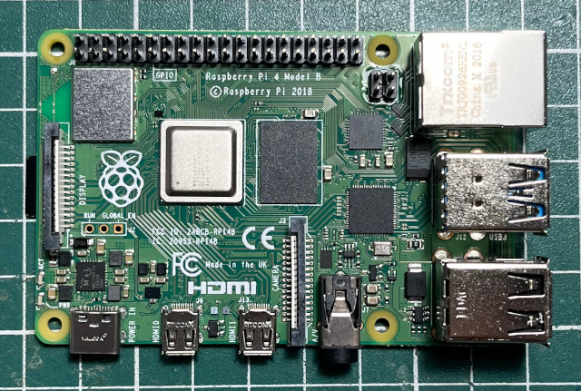
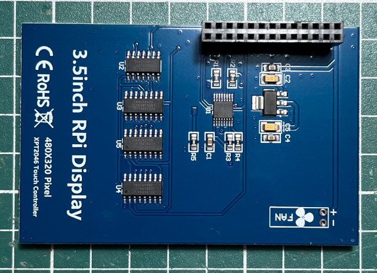
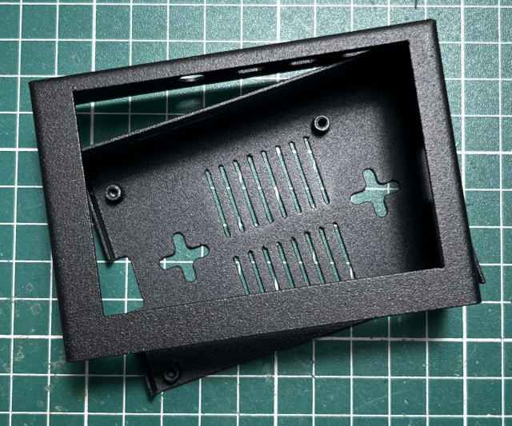
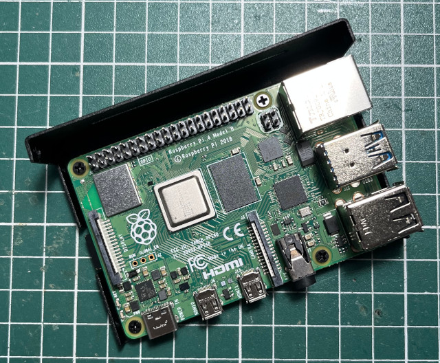
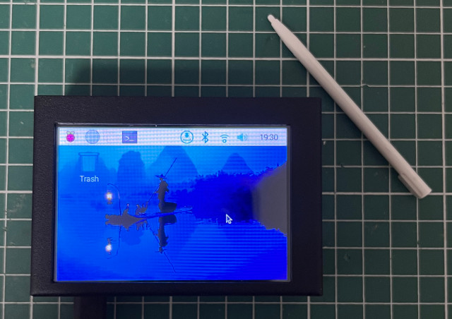

參考資訊：
https://github.com/goodtft/LCD-show
https://www.lcdwiki.com/zh/3.5inch_RPi_Display
https://www.raspberrypi.com/software/operating-systems/
https://piepie.com.tw/10842/raspberry-pi-3-uart-overlay-workaround
PC
$ cd $ wget https://downloads.raspberrypi.com/raspios_arm64/images/raspios_arm64-2025-05-13/2025-05-13-raspios-bookworm-arm64.img.xz $ xz -d 2025-05-13-raspios-bookworm-arm64.img.xz $ sudo dd if=2025-05-13-raspios-bookworm-arm64.img of=/dev/sdX bs=1M
主板




$ sudo apt-get update
$ sudo apt-get install build-essential git cmake make raspberry-kernel-headers
$ cd
$ git clone https://github.com/goodtft/LCD-show
$ cd LCD-show
$ vim LCD35-show
# sudo reboot
$ sudo ./LCD35-show
$ sudo apt --fix-broken install
$ sudo ./LCD35-show
$ sudo reboot
